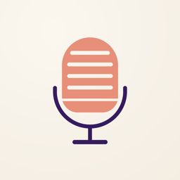
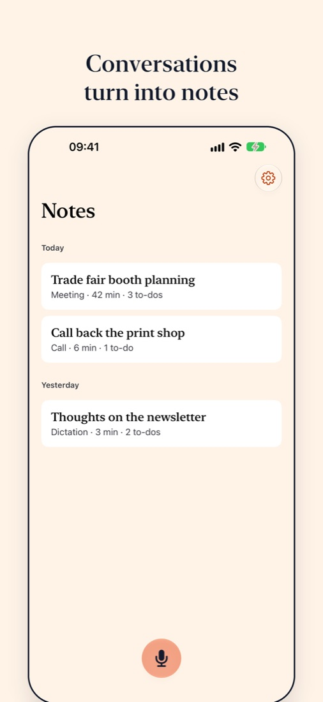
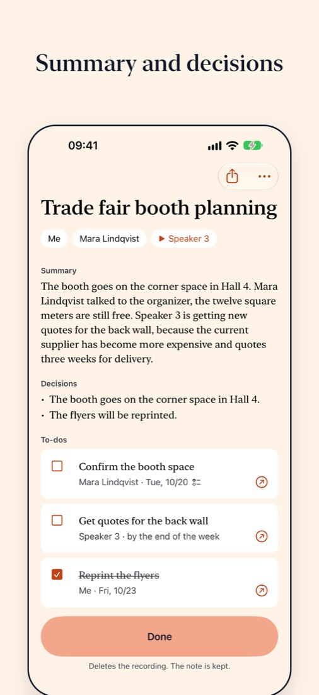
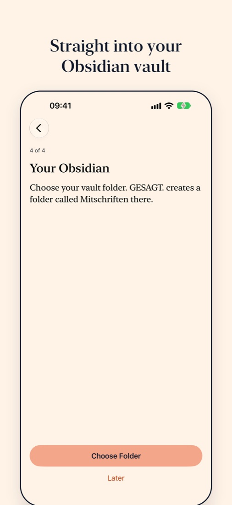

GESAGT.
Records meetings, calls and dictation and turns them into a note with transcript, summary and to-dos. Everything runs on your iPhone.



Who said what
GESAGT. separates the speakers and recognizes you by your voice. You name everyone else after the recording. Every to-do points to the moment in the conversation it came from.
Straight into Obsidian
Every note lands in your vault as a Markdown file, with frontmatter, to-dos in Tasks plugin format and the transcript in a collapsible callout.
No account, no upload
The app never sends a recording or any text to a server. Audio is deleted as soon as the note is done. The details are in the privacy policy.